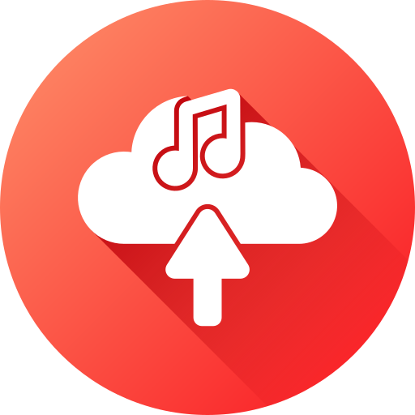

Music UploaderPrivacy policy
Last updated: October 30, 2026
Summary
Music Uploader is a personal desktop tool. It runs only on its owner's computer, uploads only to its owner's own YouTube channel, and doesn't collect, sell or share anyone's data.
What it accesses
When you sign in with Google, Music Uploader asks for two YouTube permissions:
- Upload videos (
youtube.upload): to upload test videos to your channel. Every video is uploaded as private. - View your YouTube account (
youtube.readonly): only to read the signed-in channel's name and ID, so the tool can check it's uploading to the intended channel.
It doesn't read, change or delete any of your other videos, comments, playlists, subscriptions or personal information.
What it stores
The sign-in token Google issues, and the name and ID of the chosen channel, are saved in files on your own computer, in the tool's folder, so you don't have to sign in every time. Nothing is sent to any server other than Google's own YouTube services, and there is no analytics or tracking of any kind.
Sharing
No data is shared with, sold to, or transferred to anyone. Music Uploader's use of information received from Google APIs adheres to the Google API Services User Data Policy, including the Limited Use requirements.
Removing access
You can remove Music Uploader's access at any time from your Google Account at
myaccount.google.com/permissions. Deleting the tool's
token.json file removes the saved sign-in from your computer.
Contact
Questions about this policy can be sent through the GitHub account that hosts this page.